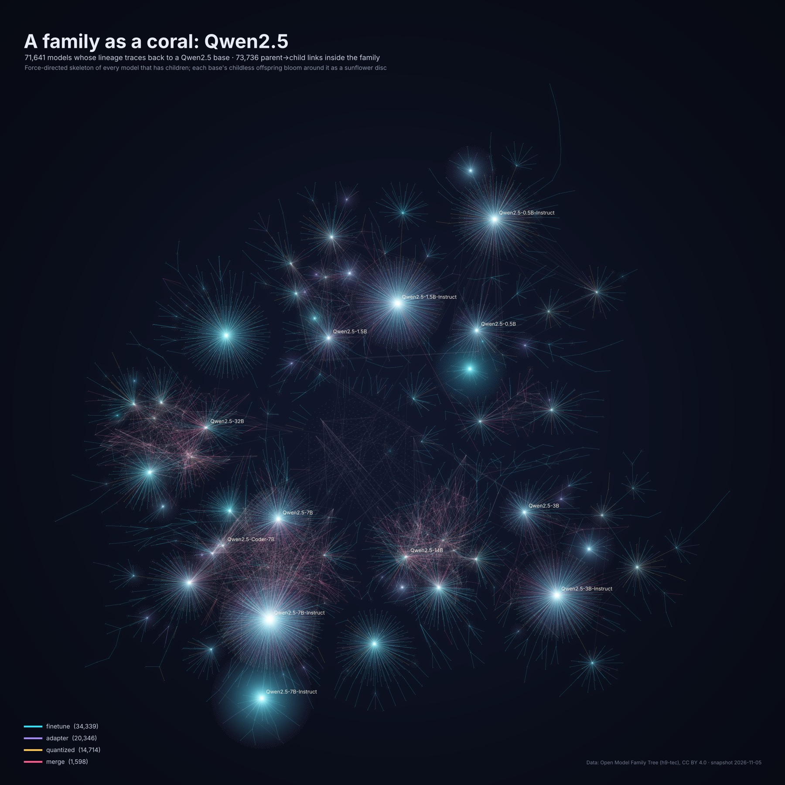
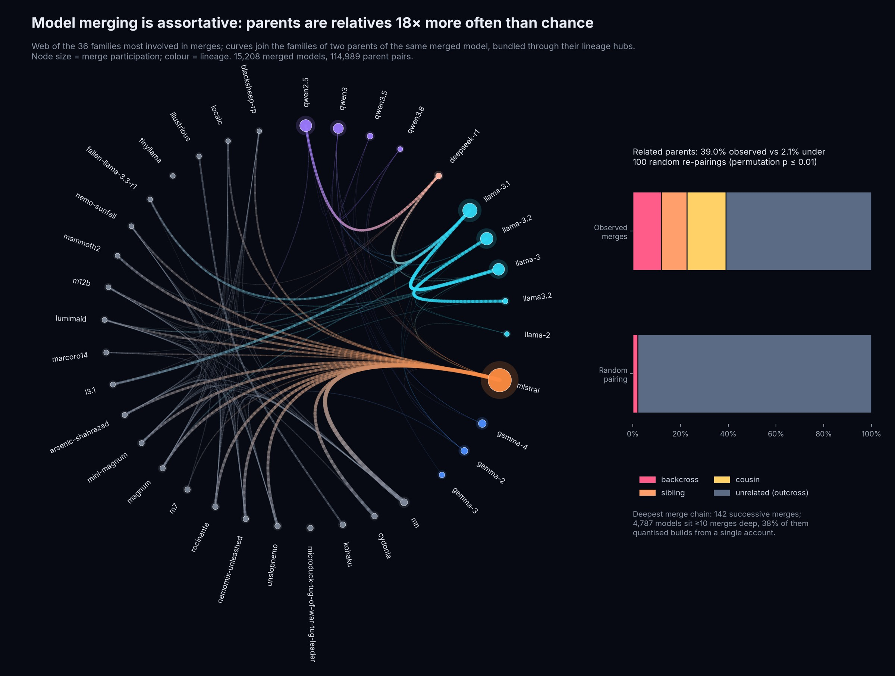
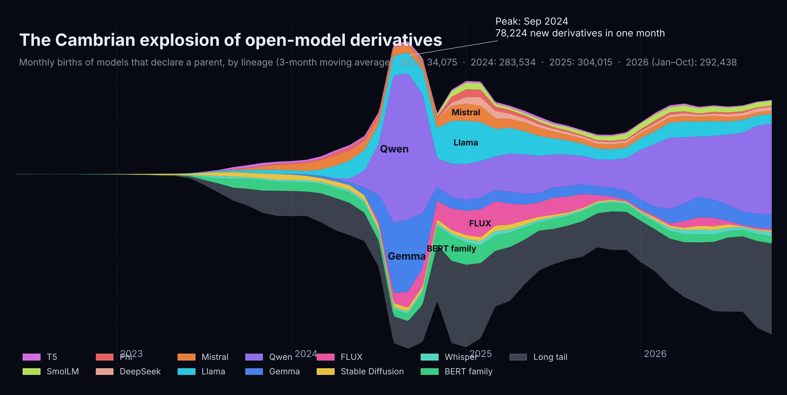
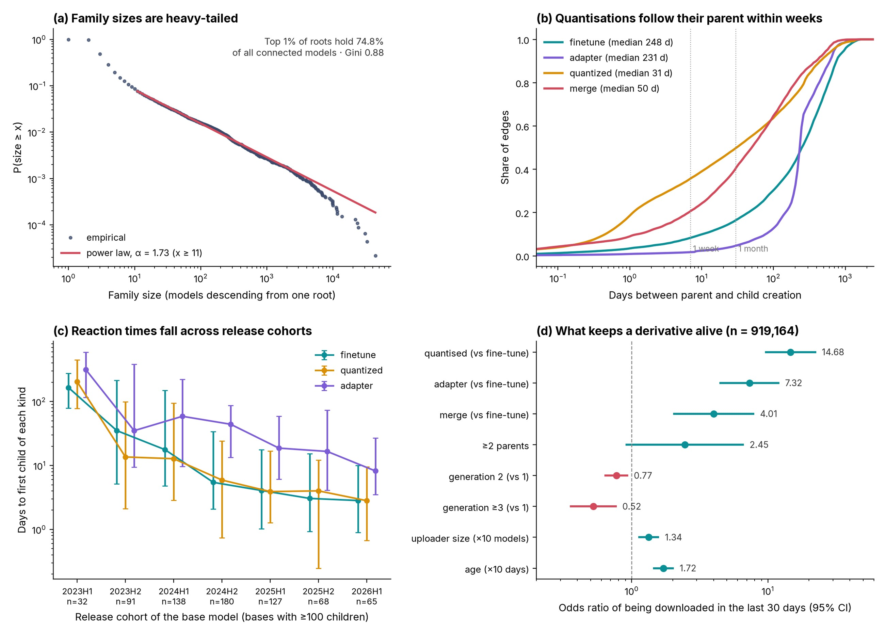
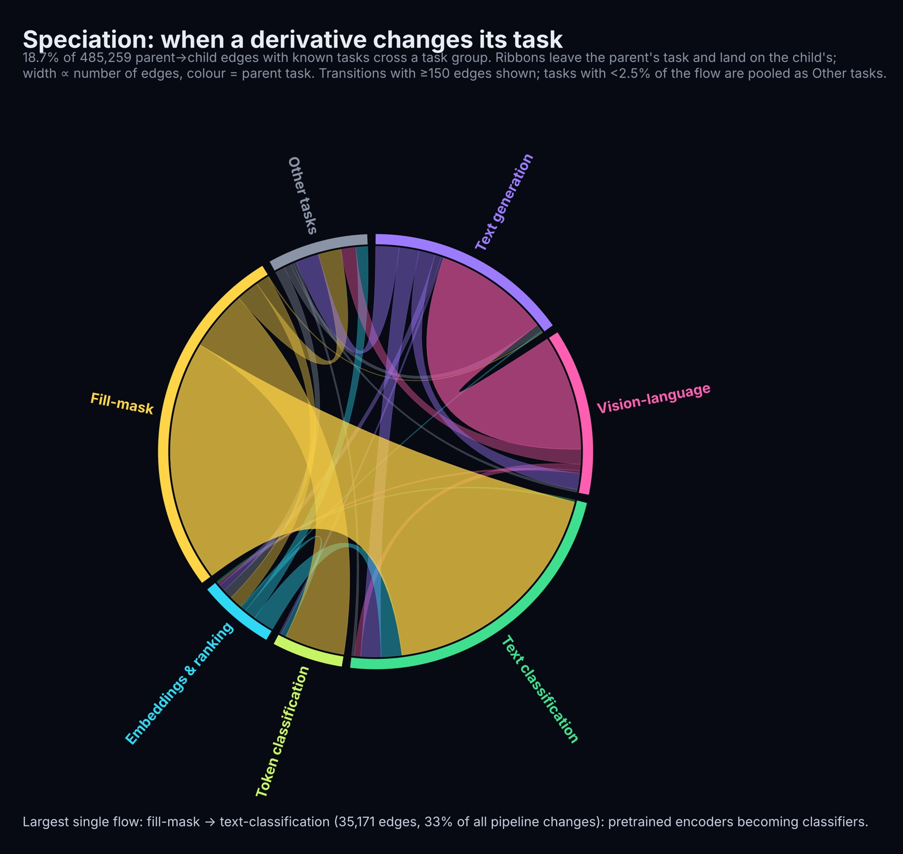

1 Introduction
Open-weight models are rarely used exactly as released. Soon after a base model is published, the community uploads fine-tuned variants, parameter-efficient adapters, quantised builds for consumer hardware, and merges that blend several models into one. On the Hugging Face Hub these derivatives can declare where they come from: a model card may name one or more base models and the kind of relation, and the Hub uses that metadata to show the base model on the model page and to find the models derived from it [10]. Aggregated over the whole Hub, these declarations form a genealogy of open models.
This paper reads that genealogy the way a biologist reads a phylogeny. Bases are roots, derivatives are descendants, merges are hybrids with several parents, and a derivative that changes its task is a speciation event. The analogy is imperfect, since models do not compete for resources and copying is free, but it gives precise vocabulary for questions that matter to platform operators, model developers and researchers who audit the supply chain of machine-learning artefacts [14, 18]. We ask five questions:
RQ1 Structure: how large, deep and concentrated are model families?
RQ2 Hybridisation: do merges combine relatives or unrelated lineages?
RQ3 Tempo: how quickly do derivatives appear, and is the ecosystem speeding up?
RQ4 Attention: how are downloads distributed across descendants, and which derivatives stay in use?
RQ5 Speciation: how often does a derivative change its task, and along which routes?
Our original design also targeted license drift, that is, whether derivatives keep the obligations attached to their ancestors’ licenses. The snapshot available in our analysis environment carries no license metadata, so we report the analyses the data support and describe the license extension as future work (Section 9).
Contributions.
(C1) A reproducible pipeline that turns declared ancestry into a cleaned lineage DAG, with explicit rules for ghosts, cycles and multi-parent merges. (C2) A phylogenetic characterisation of the whole Hub. (C3) A kinship analysis of model merging against a permutation null model. (C4) Measurements of the tempo of derivative production. (C5) An analysis of task speciation. (C6) A visual atlas, led by the radial chronogram in Figure 1.
2 Background and related work
Lineage metadata.
Model cards on the Hub carry YAML metadata. The base_model field lists parent repositories, and each link is labelled as finetune, adapter, quantized or merge, either by the author or by the Hub [10]. The Hub also exposes these links as tags prefixed base_model: [15]. Declarations are voluntary, so any graph built from them is a lower bound on actual reuse.
Empirical studies of model ecosystems.
Prior work has studied model reuse [14] and the documentation, supply-chain relationships and licensing of models and datasets on the Hub [18], and Horwitz et al. [12] argue for charting the world’s models as an atlas, a graph of models and the transformations that connect them. Closest to this paper, Laufer et al. [15] study model family trees through an evolutionary lens, measuring how traits such as licenses, languages and tasks mutate along fine-tuning edges; they set aside merges, adapters and quantisations, and leave the analysis of merges as an open direction. Licensing has also been examined for training datasets [16] and from models into downstream software [13]. We complement these with a whole-Hub, time-resolved analysis of every declared relation that treats merges, timing and task change explicitly.
Methods and visualisation.
We test heavy tails following Clauset et al. [4] with the powerlaw package [1]. The radial chronogram adapts the radial tree links popularised by D3 [2] and bundles hybrid links through common ancestors in the spirit of hierarchical edge bundling [11]; the streamgraph follows Byron and Wattenberg [3]. Layouts use igraph [5]; statistics use statsmodels [17] and NumPy [8].
3 Data
We use the Open Model Family Tree [9], a nightly rebuild of the Hub’s declared ancestry from the public hub-stats dump of the /api/models endpoint [7]. Its data-latest release (snapshot of 5 November 2026; data licensed CC BY 4.0) provides a node table with one row per public model (identifier, author, creation and modification time, downloads over the last 30 days and all time, likes, pipeline tag and library) and an edge table of 952,659 child–parent links labelled by relation. Our analysis environment could not reach the Hub directly, so this third-party snapshot is our sole source (Section 8).
Cleaning.
We dropped 1 duplicated node row and matched 2,304 parent identifiers that differed only in letter case. We kept 3,969 parents that no longer resolve to a public model as ghost nodes (deleted, private or renamed bases). Cycles can only arise from mis-declared metadata; they involved 110 nodes, and we broke them by removing 13 edges, first those whose child is older than its parent, then the incoming residual edges of the oldest node. The Hub assigns a single creation date (2022-03-02) to every repository created before it recorded dates. 29,557 models carry it, and we treat it as left-censored in all timing analyses.
Resulting graph.
965,292 models (30.0% of the Hub) declare a parent or have a child; they are joined by 952,646 edges, and 919,442 of them declare at least one parent. Of these derivatives, 39.9% are fine-tunes, 36.8% adapters, 21.6% quantisations and 1.7% merges. The graph involves 160,374 distinct accounts.
![The Tree of Open Models. Every Hugging Face model that declares a parent or has a child (965,292 models). Radius encodes the creation date, from the inner ring (early 2022) to the rim (5 November 2026); dashed rings mark 1 January of each year. Angle encodes lineage: each super-family occupies a wedge, each root’s descendants occupy an interval proportional to their number, and children are placed in birth order, so a base’s offspring sweep around it as they appear. Curves follow the primary tree; pale bundled curves are the 15,208 multi-parent merges, routed through the parents’ common ancestor. Stars mark the most-descended bases; point brightness scales with all-time downloads. The bright “sails” are single bases with very large broods of offspring created in short bursts.](figures/f1.jpg)
4 Lineage graph construction
A root is a model with descendants but no declared parent; there are 45,849.
Every non-root has a primary parent: its only parent or, for a multi-parent model, the parent with the largest lineage (ties broken by age). This rule differs from the first-listed parent for 8,543 models. Primary parents define a spanning forest, the primary tree; all other links are hybridisation edges.
A model’s generation is its depth in the primary tree. Its hybrid depth is the largest number of multi-parent events on any path from a root.
A family is the set of models below one root in the primary tree. For reporting we also use the upstream series keys (24,596 keys, such as
qwen2.5orllama-3.1) grouped into twelve super-families (Qwen, Llama, Gemma, Mistral, FLUX, Stable Diffusion, BERT family, Whisper, SmolLM, DeepSeek, Phi and T5) plus a long tail.
5 Methods
Structure (RQ1).
Family size is the number of models in a root’s primary subtree, root included. We fit a discrete power law above an chosen by Kolmogorov–Smirnov minimisation and compare it with lognormal and exponential alternatives by normalised log-likelihood ratios , where favours the power law [1, 4]. Concentration is summarised by the Gini coefficient and top shares.
Hybridisation (RQ2).
For every multi-parent model, each pair of its parents is classified by declared ancestry as a backcross (one parent descends from the other), siblings (they share a direct parent), cousins (they share a more distant ancestor) or an outcross (no shared ancestor). The null model re-pairs parents at random 100 times, shuffling them across merged models while preserving each model’s number of parents and each parent’s frequency.
Tempo (RQ3).
The lag of an edge is the child’s creation time minus the parent’s. We exclude ghost and backfilled endpoints and negative lags (0.4% of the 832,903 eligible edges). A base’s reaction time for a relation is the lag of its first child of that kind; we compute it for the 701 bases with at least 100 direct children released between 1 January 2023 and six months before the snapshot, and test cohort trends with Spearman’s . Because declaring a base became common only gradually, we repeat the test for bases released from 2024 onwards.
Attention (RQ4).
A derivative is active if it was downloaded at least once in the 30 days before the snapshot. A logistic regression relates activity to relation type, generation, having several parents, uploader size and age (both ), with super-family indicators and standard errors clustered by family key.
Speciation (RQ5).
Pipeline tags are mapped to twelve task groups (for example text generation, vision–language, text classification, fill-mask, embeddings and ranking, image and video generation). An edge speciates when parent and child fall in different groups; we use the 485,259 edges where both tags are known.
Uncertainty and robustness.
Confidence intervals for proportions come from a cluster bootstrap with families as clusters (500 replicates) [6]. We re-run headline metrics under an alternative primary-parent rule, without quantised models, without the top 1% of uploaders, and on the last 24 months only.
Visualisation.
The radial chronogram (Figure 1) places each model at an angle given by a birth-ordered depth-first layout of its family and at a radius given by its creation date; links are cubic curves that leave and enter radially. Hybrid links are bundled through the position of the parents’ most recent common ancestor. A custom additive rasteriser draws all 952,646 links with luminous blending. The coral view (Figure 2) lays out the skeleton of models that have children with a force-directed algorithm and arranges childless offspring around their parent on sunflower discs.
6 Results
6.1 Structure (RQ1)
Lineage is concentrated in a few giant families. 71.4% of roots have families of at most three models, yet the top 1% of roots (458) hold 74.8% of all connected models and the ten largest alone hold 23.2%. The Gini coefficient of family sizes is 0.88, and the largest single-root family has 43,716 models. The tail is heavy: a power law with fits sizes above (3,502 roots) and is strongly preferred to an exponential (, <0.001), but cannot be distinguished from a lognormal (, ; Figure 5a). By named lineage, the Qwen super-family alone contains 251,278 models (26.0% of the graph), and the ten largest family keys hold 42.7%.
The tree is shallow and bushy. 66.0% of derivatives are direct children of a root and only 13.1% sit three or more generations deep; the 99th percentile is 5 generations and the maximum is 39 in the primary tree, or 151 along the longest path through merges. The median parent has 2 children, while the most prolific has 43,436. Overall 95.1% of derivatives are leaves, but fertility depends sharply on the relation: 99.3% of adapters and 98.4% of quantisations never have children, against 91.6% of fine-tunes and only 43.6% of merges. Merges are the ecosystem’s breeding stock. Table 1 shows that adapters dominate the first generation, while fine-tunes and quantisations dominate later ones. Finally, 20,056 models (2.1%) descend from ghost roots, lineages whose founder is no longer public.
Table 1. Relation of each derivative to its primary parent, by generation.
| Generation | Models | Fine-tune | Adapter | Quantised | Merge |
|---|---|---|---|---|---|
| 1 | 607,233 | 38.6% | 44.3% | 16.3% | 0.8% |
| 2 | 191,813 | 43.6% | 26.2% | 27.9% | 2.3% |
| 3 | 82,510 | 40.3% | 19.2% | 36.4% | 4.1% |
| 4+ | 37,886 | 42.0% | 7.4% | 42.7% | 7.8% |

6.2 Hybridisation (RQ2)
15,208 models declare two or more parents, including 98.5% of those labelled as merges. Most hybrids have two parents (58.2%), but one lists 100. Across 114,989 parent pairs, 11.9% are backcrosses, 10.8% siblings and 16.3% cousins, while 61.0% share no declared ancestor (95% CI 53.0%–75.3%). Under random re-pairing only 2.1% of pairs are related, so merges join relatives 18.4 times more often than chance (permutation ; Figure 3). Family keys tell the same story: 51.1% of observed pairs cross family keys, against 95.0% under the null, and 31.1% cross super-families.
Merging also builds the deepest lineages. One chain reaches 142 successive merges. Of the 4,787 models that sit at least ten merges deep, 38.4% come from a single account (258 accounts in total), and 100.0% of its models at that depth are quantisations rather than merges. The 1,961 multi-parent models at that depth come from 107 accounts, and the largest of these contributes 25.3%. The largest ancestor set of a merged model contains 522 models.

6.3 Tempo (RQ3)
Derivative production exploded after 2023 (Figure 4). The graph gained 34,075 derivatives in 2023, 283,534 in 2024, 304,015 in 2025 and 292,438 in the first ten months of 2026. The busiest month, September 2024, added 78,224 derivatives, led by the Qwen super-family; no single account contributed more than 7.9% of them.

Quantisations follow their parent fastest: the median lag is 30.5 days, 18.6% arrive within a day, 35.7% within a week and 49.8% within a month. Merges follow with a median of 49.6 days (40.6% within a month). Fine-tunes (247.6 days) and adapters (231.2 days) have long lags because popular bases keep attracting derivatives for years (Figure 5b).
For the 701 heavily reused bases, the median reaction time is 6.6 days for the first quantisation, 7.2 for the first fine-tune, 29.4 for the first adapter and 29.0 for the first merge. Reaction keeps getting faster (Table 2, Figure 5c). The median time to the first fine-tune fell from 35.1 days for bases released in the second half of 2023 to 2.8 days in the first half of 2026; for quantisations it fell from 13.6 to 2.8 days, and for adapters from 35.0 to 8.2. Release date and reaction time are negatively correlated for fine-tunes (; for the 559 bases released from 2024), quantisations (; for 549 bases from 2024) and adapters ( from 2024), but not for merges (, ).
Table 2. Median days from a base’s release to its first child of each kind, by release cohort (bases with at least 100 direct children).
| Cohort | Bases | Fine-tune | Quantised | Adapter | Merge |
|---|---|---|---|---|---|
| 2023H1 | 32 | 165.2 | 203.4 | 315.0 | 1263.4 |
| 2023H2 | 91 | 35.1 | 13.6 | 35.0 | 146.1 |
| 2024H1 | 138 | 17.7 | 12.8 | 58.8 | 27.0 |
| 2024H2 | 180 | 5.4 | 5.9 | 44.1 | 20.7 |
| 2025H1 | 127 | 4.1 | 3.9 | 18.7 | 22.9 |
| 2025H2 | 68 | 3.1 | 4.0 | 16.6 | 23.9 |
| 2026H1 | 65 | 2.8 | 2.8 | 8.2 | 42.3 |
Fast reaction does not mean short attention. For the 600 bases older than a year, the median share of first-year children born in the first 30 days is only 7.3%, and half of a base’s first-year children typically arrive after 141.6 days. Production is also concentrated among uploaders: of 153,804 accounts, the top ten produce 13.7% of all derivatives, the top hundred 29.3% and the top 1% (1,603 accounts) 52.5%, a Gini coefficient of 0.77.
6.4 Attention (RQ4)
Downloads are even more concentrated than reproduction. Derivatives have accumulated 17.0 billion downloads, 95.9% of them by the top 1% of derivatives (Gini 0.993). Median all-time downloads are 938 for quantisations, 152 for merges, 53 for fine-tunes and 22 for adapters. 12.4% of derivatives had no download in the last 30 days (95% CI 9.6%–15.6%) and 11.4% were never downloaded. Dormancy reaches 25.2% among fine-tunes, against 4.6% for adapters, 2.7% for quantisations and 5.2% for merges.
The regression (n = 919,164, pseudo- = 0.226; Figure 5d) confirms the ranking. Relative to fine-tunes, the odds of being active are 14.68 times higher for quantisations (95% CI 9.70–22.22), 7.32 for adapters and 4.01 for merges. They fall with generation (0.77 for generation two, 0.52 for three or more) and rise with uploader size (1.34 per tenfold) and age (1.72 per tenfold); having several parents has no clear effect (2.45, CI 0.92–6.56).
Within the 1,107 families with at least 50 descendants, descendants collect a median 23.5% of the family’s downloads, and in 25.0% of families at least one child out-downloads its root. Reproduction and use are related but not aligned: the rank correlation between a parent’s number of children and its downloads is 0.47 among 6,139 parents with at least ten children, and 11.7% of the 894 bases with at least 100 children owe 90% or more of them to adapters.

6.5 Speciation (RQ5)
Of the 485,259 edges whose two endpoints have a known task, 18.7% cross a task group (95% CI 11.7%–27.7%), and 22.1% change the exact pipeline tag (Figure 6). Fine-tunes speciate most (28.5%), followed by quantisations (11.8%) and adapters (9.2%); merges rarely do (2.7%). The single largest route is fill-mask to text classification (35,171 edges, 32.7% of all pipeline changes), followed by vision–language to text generation (14,898) and fill-mask to token classification (8,760). By parent task, 92.9% of edges from fill-mask models change task and 30.9% from embedding and ranking models, against 4.8% for text generation and 1.0% for image and video generation: generative lineages rarely speciate. Formats migrate too: 24.2% of the 131,172 quantised edges with known libraries change library, led by Transformers to MLX (8,794) and to GGUF (4,175).

6.6 Robustness
Table 3 repeats five headline metrics under four alternative specifications. Concentration, speciation and dormancy stay of the same order in every case, and the first-listed parent rule leaves them almost unchanged.
Table 3. Headline metrics under alternative specifications: Gini and top-10 share of family sizes, speciation rate, median fine-tune lag (days) and dormant share. Family metrics here count families of at least two models, so the top-10 share differs slightly from the value in the text.
| Specification | Gini | Top-10 | Speciation | Lag (d) | Dormant |
|---|---|---|---|---|---|
| Main specification | 0.88 | 23.3% | 18.7% | 247.6 | 12.4% |
| First-listed primary parent | 0.88 | 23.1% | 18.7% | 247.6 | 12.4% |
| Without quantised models | 0.92 | 28.7% | 20.4% | 247.6 | 15.1% |
| Without top 1% uploaders | 0.88 | 21.1% | 22.4% | 229.7 | 17.6% |
| Last 24 months only | 0.86 | 20.8% | 17.6% | 275.6 | 15.0% |
7 Discussion
A few bases carry the ecosystem.
With 74.8% of all connected models below the top 1% of roots, an evaluation, audit or safety fix applied to a handful of bases reaches most of the Hub’s derivatives, and a defect in one of them propagates just as far. Lineage metadata is what makes such propagation traceable.
Derivatives arrive in days.
Fine-tunes and quantisations of a major release now appear within days, and reaction times have fallen across release cohorts. Release processes, evaluations and responsible-use guidance should assume that derivatives exist almost immediately; quantisers act as distribution infrastructure, and their builds have the highest median downloads of any relation.
Merging favours relatives, and its deepest chains are concentrated.
Merges join relatives far more often than chance, although most parent pairs (61.0%) still share no declared ancestor. Chains reach 142 merges deep, and most of the deepest multi-parent models come from a small number of accounts. Such chains make provenance hard to reason about without tooling, and license and safety obligations may be easier to lose along them.
Speciation follows architecture.
Fill-mask encoders are starting points that are almost always re-purposed, while generative models are mostly specialised within their task. Vision–language bases routinely give rise to text-only descendants.
Implications for platforms.
Platforms could validate declarations at upload (cycles, children older than their parents), surface ghost parents, rank search results with lineage-aware signals, and propagate notices such as deprecations or vulnerability reports down a lineage.
8 Threats to validity
Construct.
We observe declared ancestry only: 28.6% of models declare a parent, so all counts are lower bounds, and relation labels may be inferred or wrong. Family keys rely on a naming heuristic. Download counts follow the Hub’s counting conventions and include automated traffic.
Internal.
Creation time is not release time, the earliest dates are backfilled, and 0.4% of lags are negative. The acceleration of reaction times could partly reflect the adoption of declarations; restricting the test to bases released from 2024 onwards preserves the trend.
External.
We study one platform at one point in time through a third-party rebuild of its metadata; our reconstruction applies its own cleaning rules and may differ slightly from the upstream summaries.
9 Ethics, limitations and future work
We use public metadata only, report individual accounts anonymously, and make no judgement about the legality of any model. The main limitation is the missing license metadata, which prevented the license-drift analysis of our original design. That analysis would map each declared license to a class (permissive, copyleft, use-restricted, vendor-specific, non-commercial, no-derivatives) whose obligations flow down the lineage; a derivative is inconsistent when its declared license drops an inherited obligation, and inconsistencies can be split into those introduced at an edge and those inherited from an inconsistent parent. This would extend the license drift reported by Laufer et al. [15] and Jewitt et al. [13] to every relation and to inherited obligations. The lineage graph, primary tree and topological order are in place; what remains is to collect per-model license tags from the Hub’s metadata and implement the obligation propagation.
10 Conclusion
The Hugging Face Hub has grown a family tree of 965,292 connected models. It is dominated by a few giant lineages, reproduces fastest through quantisation, hybridises with relatives far more often than chance, and speciates mainly where encoders become task models. Reading the Hub as a phylogeny turns scattered metadata into a map of how open models actually spread.
Data and code availability.
The analysis pipeline, derived tables and figure scripts are at https://github.com/thanatchon36/open-model-phylogeny. All research data, including the pinned raw snapshot, are at https://huggingface.co/datasets/thanatchon36/open-model-phylogeny. An archived release is at https://doi.org/10.5281/zenodo.24029159. The lineage data are from the Open Model Family Tree [9] under CC BY 4.0, derived from Hub metadata via hub-stats [7].
Acknowledgements.
The data pipeline, figures and first draft of this paper were produced with the assistance of Claude (Anthropic), an AI system, under the direction of the author, who is responsible for verifying all content.
References
[1] J. Alstott, E. Bullmore and D. Plenz. powerlaw: a Python package for analysis of heavy-tailed distributions. PLoS ONE, 9(1):e85777, 2014.
[2] M. Bostock, V. Ogievetsky and J. Heer. D: Data-driven documents. IEEE Transactions on Visualization and Computer Graphics, 17(12):2301–2309, 2011.
[3] L. Byron and M. Wattenberg. Stacked graphs: geometry & aesthetics. IEEE Transactions on Visualization and Computer Graphics, 14(6):1245–1252, 2008.
[4] A. Clauset, C. R. Shalizi and M. E. J. Newman. Power-law distributions in empirical data. SIAM Review, 51(4):661–703, 2009.
[5] G. Csárdi and T. Nepusz. The igraph software package for complex network research. InterJournal, Complex Systems, 1695, 2006.
[6] B. Efron and R. J. Tibshirani. An Introduction to the Bootstrap. Chapman & Hall, 1993.
[7] cfahlgren1. hub-stats: daily dumps of Hugging Face Hub metadata. Dataset cfahlgren1/hub-stats on the Hugging Face Hub (Apache-2.0), as referenced by [9].
[8] C. R. Harris et al. Array programming with NumPy. Nature, 585:357–362, 2020.
[9] h9-tec. Open Model Family Tree. GitHub repository https://github.com/h9-tec/model-family-tree, release data-latest (snapshot 2026-11-05, accessed 6 November 2026). Data CC BY 4.0.
[10] Hugging Face. Model cards. Hugging Face Hub documentation, https://huggingface.co/docs/hub/model-cards (accessed 6 November 2026).
[11] D. Holten. Hierarchical edge bundles: visualization of adjacency relations in hierarchical data. IEEE Transactions on Visualization and Computer Graphics, 12(5):741–748, 2006.
[12] E. Horwitz, N. Kurer, J. Kahana, L. Amar and Y. Hoshen. We should chart an atlas of all the world’s models. In Advances in Neural Information Processing Systems 38, pages 162852–162873, 2025.
[13] J. Jewitt, H. Li, B. Adams, G. K. Rajbahadur and A. E. Hassan. From Hugging Face to GitHub: tracing license drift in the open-source AI ecosystem. arXiv:2509.09873, 2025.
[14] W. Jiang, N. Synovic, M. Hyatt, T. R. Schorlemmer, R. Sethi, Y.-H. Lu, G. K. Thiruvathukal and J. C. Davis. An empirical study of pre-trained model reuse in the Hugging Face deep learning model registry. In Proceedings of the 45th International Conference on Software Engineering (ICSE), pages 2463–2475, 2023.
[15] B. Laufer, H. Oderinwale and J. Kleinberg. Anatomy of a machine learning ecosystem: 2 million models on Hugging Face. arXiv:2508.06811, 2025.
[16] S. Longpre et al. A large-scale audit of dataset licensing and attribution in AI. Nature Machine Intelligence, 6(8):975–987, 2024.
[17] S. Seabold and J. Perktold. statsmodels: Econometric and statistical modeling with Python. In Proceedings of the 9th Python in Science Conference, pages 92–96, 2010.
[18] T. Stalnaker, N. Wintersgill, O. Chaparro, L. A. Heymann, M. Di Penta, D. M. German and D. Poshyvanyk. An empirical analysis of machine learning model and dataset documentation, supply chain, and licensing challenges on Hugging Face. ACM Transactions on Software Engineering and Methodology, pages 1–49, 2026.
A Numbers ledger
Every number in the text is a macro generated from results/results.json by src/make_macros.py; Tables 1–3 are generated from the same file.
| Macro | Value | Source key in results.json |
|---|---|---|
\nModelsHub |
3,213,043 | overview.n_models_hub |
\nConnected |
965,292 | overview.n_connected |
\pctConnected |
30.0% | overview.share_connected |
\nChildren |
919,442 | overview.n_children |
\pctDeclare |
28.6% | overview.share_declare_parent |
\nEdges |
952,646 | overview.n_edges |
\nRoots |
45,849 | overview.n_roots |
\nGhost |
3,969 | overview.n_ghost |
\nFamilies |
24,596 | overview.n_families |
\nAuthors |
160,374 | overview.n_authors_connected |
\nFinetune |
367,086 | overview.children_by_relation.finetune |
\nAdapter |
338,228 | overview.children_by_relation.adapter |
\nQuantized |
198,649 | overview.children_by_relation.quantized |
\nMergeKids |
15,441 | overview.children_by_relation.merge |
\pctFinetune |
39.9% | overview.share_children_by_relation.finetune |
\pctAdapter |
36.8% | overview.share_children_by_relation.adapter |
\pctQuantized |
21.6% | overview.share_children_by_relation.quantized |
\pctMerge |
1.7% | overview.share_children_by_relation.merge |
\nMergeEdges |
48,633 | overview.edges_by_relation.merge |
\nRawEdges |
952,659 | build.n_edges_raw |
\nDupRows |
1 | build.duplicate_node_rows_dropped |
\nRescued |
2,304 | build.parents_rescued_case_insensitive |
\nCycleNodes |
110 | build.cycle_nodes_initial |
\nCycleEdges |
13 | build.cycle_edges_removed |
\backfillDate |
2022-03-02 | build.backfill_date |
\nBackfill |
29,557 | build.backfill_date_n |
\nPrimaryChanged |
8,543 | build.primary_changed_vs_first_listed |
\familyMedian |
2 | rq1.root_family_size_median |
\familyMean |
21.1 | rq1.root_family_size_mean |
\familyMax |
43,716 | rq1.root_family_size_max |
\pctRootsSmall |
71.4% | rq1.share_roots_size_le_3 |
\pctTopTenRoots |
23.2% | rq1.top10_roots_share_of_connected |
\nTopOnePctRoots |
458 | rq1.top1pct_roots_n |
\pctTopOnePctRoots |
74.8% | rq1.top1pct_roots_share_of_connected |
\giniFamily |
0.88 | rq1.gini_root_family_size |
\pctTopTenKeys |
42.7% | rq1.top10_family_keys_share |
\nQwenTwoFive |
71,641 | rq1.top10_family_keys.qwen2.5 |
\plAlpha |
1.73 | rq1.powerlaw_alpha |
\plXmin |
11 | rq1.powerlaw_xmin |
\plNtail |
3,502 | rq1.powerlaw_n_tail |
\plLnR |
-1.02 | rq1.pl_vs_lognormal_R |
\plLnP |
0.31 | rq1.pl_vs_lognormal_p |
\plExR |
14.4 | rq1.pl_vs_exponential_R |
\plExP |
<0.001 | rq1.pl_vs_exponential_p |
\pctDepthOne |
66.0% | rq1.depth_share_1 |
\pctDepthThree |
13.1% | rq1.depth_share_ge3 |
\depthPnn |
5 | rq1.depth_p99 |
\depthMax |
39 | rq1.depth_max |
\ldepthMax |
151 | rq1.ldepth_max |
\outdegMedian |
2 | rq1.outdeg_median |
\outdegPnn |
99 | rq1.outdeg_p99 |
\outdegMax |
43,436 | rq1.outdeg_max |
\pctLeaves |
95.1% | rq1.share_children_leaves |
\pctLeafFinetune |
91.6% | rq1.leaf_share_by_relation.finetune |
\pctLeafAdapter |
99.3% | rq1.leaf_share_by_relation.adapter |
\pctLeafQuantized |
98.4% | rq1.leaf_share_by_relation.quantized |
\pctLeafMerge |
43.6% | rq1.leaf_share_by_relation.merge |
\nUnderGhost |
20,056 | rq1.nodes_under_ghost_roots |
\pctUnderGhost |
2.1% | rq1.share_nodes_under_ghost_roots |
\nQwenSuper |
251,278 | rq1.super_family_sizes.Qwen |
\nHybrids |
15,208 | rq2.n_hybrids |
\nMergeLabelled |
15,441 | rq2.n_merge_labelled |
\pctMergeMulti |
98.5% | rq2.share_merge_labelled_multi_parent |
\nTwoParents |
8,845 | rq2.parents_per_hybrid.2 |
\maxParents |
100 | rq2.parents_per_hybrid_max |
\nPairs |
114,989 | rq2.n_parent_pairs |
\pctBackcross |
11.9% | rq2.kinship_share.backcross |
\pctSibling |
10.8% | rq2.kinship_share.sibling |
\pctCousin |
16.3% | rq2.kinship_share.cousin |
\pctOutcross |
61.0% | rq2.kinship_share.outcross |
\pctRelated |
39.0% | rq2.related_share |
\pctCrossFamily |
51.1% | rq2.cross_family_pair_share |
\pctCrossSuper |
31.1% | rq2.cross_super_family_pair_share |
\pctNullRelated |
2.1% | rq2.null_related_share_mean |
\pctNullCross |
95.0% | rq2.null_cross_family_share_mean |
\assortRatio |
18.4 | rq2.assortativity_ratio_related |
\permP |
0.01 | rq2.perm_p_related |
\hybDepthMax |
142 | rq2.hybrid_depth_max |
\nDeepHybrid |
4,787 | rq2.n_nodes_hybrid_depth_ge10 |
\nDeepAuthors |
258 | rq2.authors_hybrid_depth_ge10 |
\pctDeepTopAuthor |
38.4% | rq2.top_author_share_hybrid_depth_ge10 |
\pctDeepTopAuthorQuant |
100.0% | rq2.top_author_quantized_share_hybrid_depth_ge10 |
\nDeepMulti |
1,961 | rq2.n_multi_parent_hybrid_depth_ge10 |
\nDeepMultiAuthors |
107 | rq2.authors_multi_parent_hybrid_depth_ge10 |
\pctDeepMultiTopAuthor |
25.3% | rq2.top_author_share_multi_parent_hybrid_depth_ge10 |
\ancMax |
522 | rq2.anc_size_max |
\outcrossLo |
53.0% | rq2.outcross_ci.0 |
\outcrossHi |
75.3% | rq2.outcross_ci.1 |
\nLagEdges |
832,903 | rq3.edges_valid_for_lag |
\pctNegLag |
0.4% | rq3.share_negative_lag |
\lagFinetune |
247.6 | rq3.lag_finetune.median_days |
\lagAdapter |
231.2 | rq3.lag_adapter.median_days |
\lagQuantized |
30.5 | rq3.lag_quantized.median_days |
\lagMerge |
49.6 | rq3.lag_merge.median_days |
\pctQuantDay |
18.6% | rq3.lag_quantized.share_within_1d |
\pctQuantWeek |
35.7% | rq3.lag_quantized.share_within_7d |
\pctQuantMonth |
49.8% | rq3.lag_quantized.share_within_30d |
\pctFinetuneWeek |
8.3% | rq3.lag_finetune.share_within_7d |
\pctMergeMonth |
40.6% | rq3.lag_merge.share_within_30d |
\nMajorBases |
701 | rq3.n_major_bases |
\rtFinetuneEarly |
35.1 | rq3.reaction_median_days_by_half.2023H2.finetune |
\rtFinetuneLate |
2.8 | rq3.reaction_median_days_by_half.2026H1.finetune |
\rtQuantEarly |
13.6 | rq3.reaction_median_days_by_half.2023H2.quantized |
\rtQuantLate |
2.8 | rq3.reaction_median_days_by_half.2026H1.quantized |
\rtAdapterEarly |
35.0 | rq3.reaction_median_days_by_half.2023H2.adapter |
\rtAdapterLate |
8.2 | rq3.reaction_median_days_by_half.2026H1.adapter |
\rtQuantAll |
6.6 | rq3.reaction_trend_quantized.median_days |
\rtFinetuneAll |
7.2 | rq3.reaction_trend_finetune.median_days |
\rtAdapterAll |
29.4 | rq3.reaction_trend_adapter.median_days |
\rtMergeAll |
29.0 | rq3.reaction_trend_merge.median_days |
\rhoFinetuneAll |
-0.42 | rq3.reaction_trend_finetune.spearman_rho |
\rhoQuantAll |
-0.29 | rq3.reaction_trend_quantized.spearman_rho |
\rhoFinetune |
-0.31 | rq3.reaction_trend_finetune_since2024.spearman_rho |
\nRhoFinetune |
559 | rq3.reaction_trend_finetune_since2024.n |
\rhoQuant |
-0.21 | rq3.reaction_trend_quantized_since2024.spearman_rho |
\nRhoQuant |
549 | rq3.reaction_trend_quantized_since2024.n |
\rhoAdapter |
-0.27 | rq3.reaction_trend_adapter_since2024.spearman_rho |
\rhoMerge |
0.05 | rq3.reaction_trend_merge_since2024.spearman_rho |
\pRhoMerge |
0.42 | rq3.reaction_trend_merge_since2024.p |
\nDecayBases |
600 | rq3.n_bases_decay |
\pctFirstMonth |
7.3% | rq3.decay_share_first30d_median |
\halfLife |
141.6 | rq3.decay_halflife_days_median |
\birthsPeakMonth |
September 2024 | rq3.births_peak_month |
\birthsPeakCount |
78,224 | rq3.births_peak_count |
\birthsTwentyThree |
34,075 | rq3.births_by_year.2023 |
\birthsTwentyFour |
283,534 | rq3.births_by_year.2024 |
\birthsTwentyFive |
304,015 | rq3.births_by_year.2025 |
\birthsTwentySix |
292,438 | rq3.births_by_year.2026 |
\nUploaders |
153,804 | rq3.n_uploaders_children |
\pctTopTenUploaders |
13.7% | rq3.share_children_top10_uploaders |
\pctTopHundredUploaders |
29.3% | rq3.share_children_top100_uploaders |
\giniUploaders |
0.77 | rq3.gini_children_per_uploader |
\pctPeakTopUploader |
7.9% | rq3.peak_month_top_uploader_share |
\peakSuper |
Qwen | rq3.peak_month_top_super |
\nTopUploaders |
1,603 | robustness.top1pct_uploaders_n |
\pctTopUploaders |
52.5% | robustness.top1pct_uploaders_share_children |
\pctZeroAll |
11.4% | rq4.share_children_zero_downloads_all |
\pctDormant |
12.4% | rq4.share_children_dormant_30d |
\dormantLo |
9.6% | rq4.dormant_ci.0 |
\dormantHi |
15.6% | rq4.dormant_ci.1 |
\pctDormantFinetune |
25.2% | rq4.dormant_by_relation.finetune |
\pctDormantAdapter |
4.6% | rq4.dormant_by_relation.adapter |
\pctDormantQuantized |
2.7% | rq4.dormant_by_relation.quantized |
\pctDormantMerge |
5.2% | rq4.dormant_by_relation.merge |
\dlFinetune |
53 | rq4.median_downloads_all_by_relation.finetune |
\dlAdapter |
22 | rq4.median_downloads_all_by_relation.adapter |
\dlQuantized |
938 | rq4.median_downloads_all_by_relation.quantized |
\dlMerge |
152 | rq4.median_downloads_all_by_relation.merge |
\totalChildDownloads |
17.0 billion | rq4.children_downloads_all_total |
\pctTopDownloads |
95.9% | rq4.share_child_downloads_top1pct |
\giniDownloads |
0.993 | rq4.gini_child_downloads_all |
\nBigFamilies |
1,107 | rq4.n_big_families |
\pctDescShare |
23.5% | rq4.family_download_share_descendants_median |
\pctOutgrow |
25.0% | rq4.share_families_child_outgrows_root |
\rhoKids |
0.47 | rq4.spearman_children_vs_downloads.rho |
\nRhoKids |
6,139 | rq4.spearman_children_vs_downloads.n |
\nBasesHundred |
894 | rq4.n_bases_ge100 |
\pctAdapterDominated |
11.7% | rq4.share_bases_adapter_dominated |
\nLogit |
919,164 | rq4.logit_n |
\pseudoRsq |
0.226 | rq4.logit_pseudo_r2 |
\nTaskEdges |
485,259 | rq5.edges_with_both_tasks |
\pctSpeciation |
18.7% | rq5.speciation_rate |
\specLo |
11.7% | rq5.speciation_ci.0 |
\specHi |
27.7% | rq5.speciation_ci.1 |
\pctSpecFinetune |
28.5% | rq5.speciation_by_relation.finetune |
\pctSpecAdapter |
9.2% | rq5.speciation_by_relation.adapter |
\pctSpecQuantized |
11.8% | rq5.speciation_by_relation.quantized |
\pctSpecMerge |
2.7% | rq5.speciation_by_relation.merge |
\pctPipelineChange |
22.1% | rq5.pipeline_change_rate |
\nFillMaskClass |
35,171 | rq5.top_pipeline_transitions.0.n |
\pctTopTransition |
32.7% | rq5.top_transition_share_of_changes |
\nVlmText |
14,898 | rq5.top_pipeline_transitions.1.n |
\nFillMaskToken |
8,760 | rq5.top_pipeline_transitions.2.n |
\pctSpecFillMask |
92.9% | rq5.speciation_by_source_task.Fill-mask.rate |
\pctSpecEmbed |
30.9% | rq5.speciation_by_source_task.Embeddings & ranking.rate |
\pctSpecTextGen |
4.8% | rq5.speciation_by_source_task.Text generation.rate |
\pctSpecImageGen |
1.0% | rq5.speciation_by_source_task.Image & video generation.rate |
\nQuantLib |
131,172 | rq5.quantized_edges_with_library |
\pctLibChange |
24.2% | rq5.quantized_library_change_rate |
\nToMlx |
8,794 | rq5.top_quantized_library_transitions.0.n |
\nToGguf |
4,175 | rq5.top_quantized_library_transitions.1.n |
\orQuant |
14.68 | rq4.logit_or.rel_quantized.or |
\orQuantLo |
9.70 | rq4.logit_or.rel_quantized.lo |
\orQuantHi |
22.22 | rq4.logit_or.rel_quantized.hi |
\orAdapter |
7.32 | rq4.logit_or.rel_adapter.or |
\orAdapterLo |
4.49 | rq4.logit_or.rel_adapter.lo |
\orAdapterHi |
11.94 | rq4.logit_or.rel_adapter.hi |
\orMerge |
4.01 | rq4.logit_or.rel_merge.or |
\orMergeLo |
2.05 | rq4.logit_or.rel_merge.lo |
\orMergeHi |
7.82 | rq4.logit_or.rel_merge.hi |
\orGenTwo |
0.77 | rq4.logit_or.gen2.or |
\orGenTwoLo |
0.64 | rq4.logit_or.gen2.lo |
\orGenTwoHi |
0.93 | rq4.logit_or.gen2.hi |
\orGenThree |
0.52 | rq4.logit_or.gen3p.or |
\orGenThreeLo |
0.36 | rq4.logit_or.gen3p.lo |
\orGenThreeHi |
0.76 | rq4.logit_or.gen3p.hi |
\orHybrid |
2.45 | rq4.logit_or.hybrid.or |
\orHybridLo |
0.92 | rq4.logit_or.hybrid.lo |
\orHybridHi |
6.56 | rq4.logit_or.hybrid.hi |
\orAuthor |
1.34 | rq4.logit_or.log_author.or |
\orAuthorLo |
1.14 | rq4.logit_or.log_author.lo |
\orAuthorHi |
1.57 | rq4.logit_or.log_author.hi |
\orAge |
1.72 | rq4.logit_or.log_age.or |
\orAgeLo |
1.46 | rq4.logit_or.log_age.lo |
\orAgeHi |
2.01 | rq4.logit_or.log_age.hi |
\pctQwenSuper |
26.0% | rq1.super_family_sizes.Qwen / overview.n_connected |
\pctOtherSuper |
30.9% | rq1.super_family_sizes.Other / overview.n_connected |
\pctTwoParents |
58.2% | rq2.parents_per_hybrid.2 / rq2.n_hybrids |